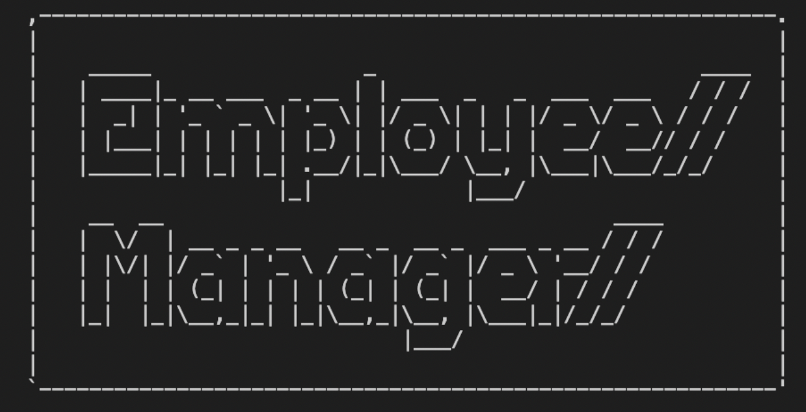

Employee Manager Project
 GitHub RepoI am currently participating in the UNCC Coding Bootcamp to become a full stack web developer. Once I am finished, I will be familiar with HTML, CSS, and Javascript, as well as APIs, Servers, and MERN.
I am from Mount Pleasant, NC, and I recently graduated from Belmont Abbey College with a Bachelors degree in History. I became interested in coding after speaking to a friend who had already gone through the UNC Coding Bootcamp. He mentioned that the Bootcamp was very helpful in helping him further his career in web and app development.